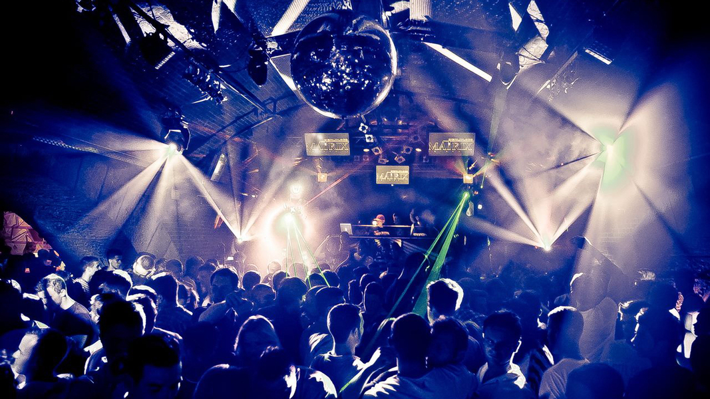
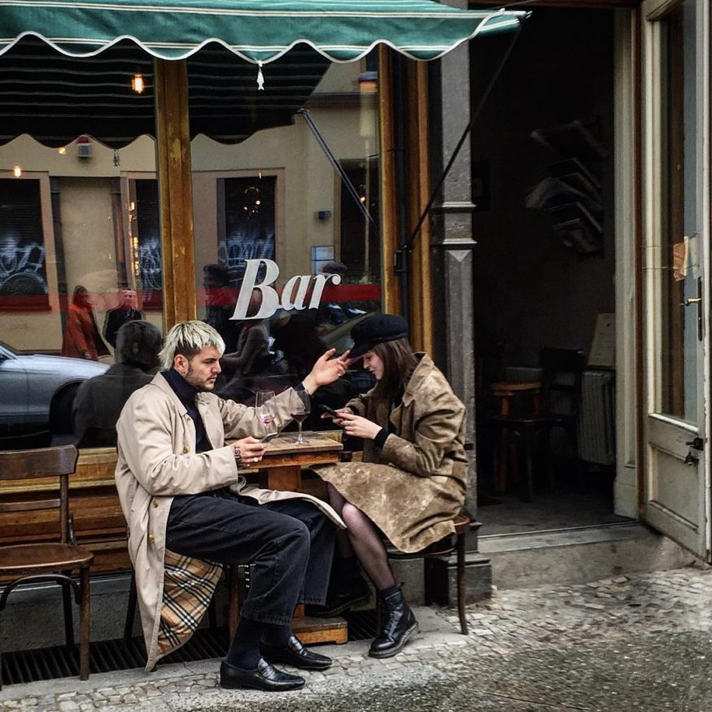

Party Time
Notre algorithme à trouvé que vous êtes fêtard... Tant mieux! Nous avons ce qu'il vous faut!
Grâce à ce pack, vous voyagerez dans les villes les plus festives du monde. Alors préparez vous à vivre une expérience folle qui durera jusqu'au bout de la nuit, à vous les bars, les clubs et les festivals! Vous êtes déjà parti, mais avant essayez de prendre un moment pour vous imaginer ce que donnerait ce voyage fou. Lisez donc la description d'une destination que nous proposons, et tentez de deviner où nous vous enverrons!
"Berlin, Le nouveau style de vie Européen ."
Multiculturelle, innovatrice toute en restant sur ses bases Berlin se distingue par l’architecture et son design la ville allie les influences modernes a ses racines et entraîne aussi de nouvelles vagues culturelles dans la mode et l’art.
Nightlife in Berlin
Quand on parle de sorties nocturnes Berlin n'a rien a envier aux autres capitales branchées d’Europe. Par son slogan « Berlin – Poor. But Sexy » , la capitale allemande attire plus de 11 millions de touristes chaque année. Une des principales raisons de cette attirance pour les touristes sont les endroits divers qui pour s’amuser le soir. Entre les festivals réguliers qui animent la ville l'été, de multiples clubs et bars offrent un large panel de place pour faire la fête, Berlin est devenu extrêmement attractif aux jeunes qui veulent sortir. Des districts entiers comme Prenzlauer Berg, Friedrichshain et Kreuzberg sont devenu la référence de la fête. Des bars les plus intimes aux clubs d’électro nous vous offrons le meilleur parcours à travers Berlin de nuit .
